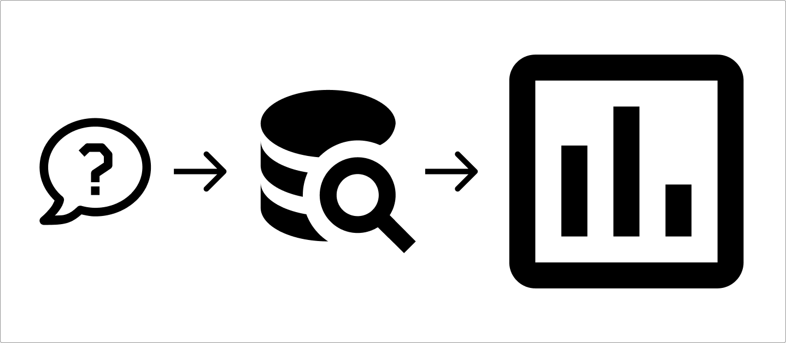
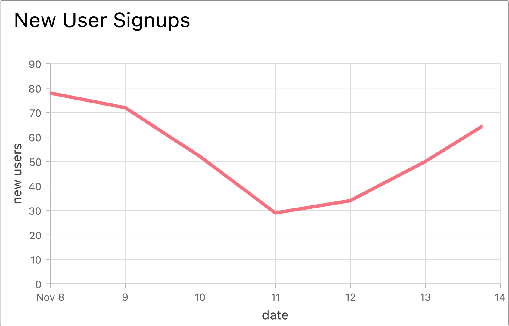
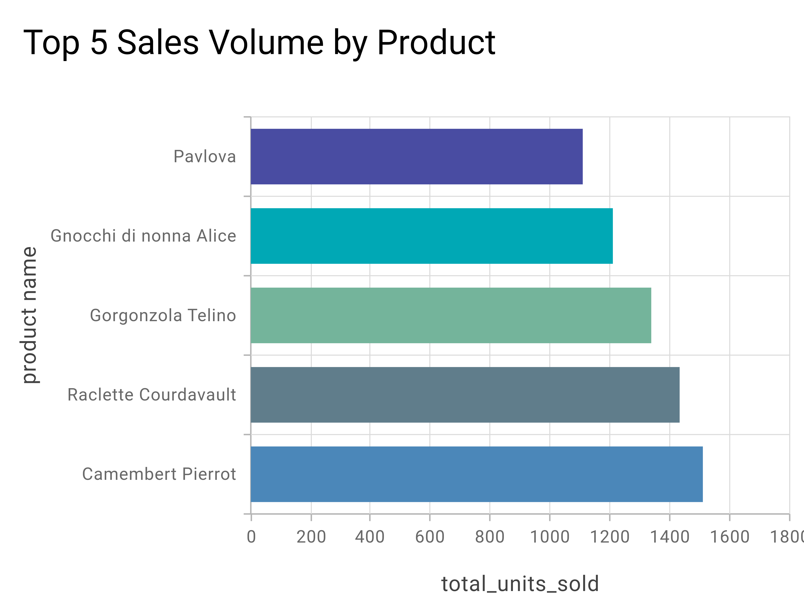
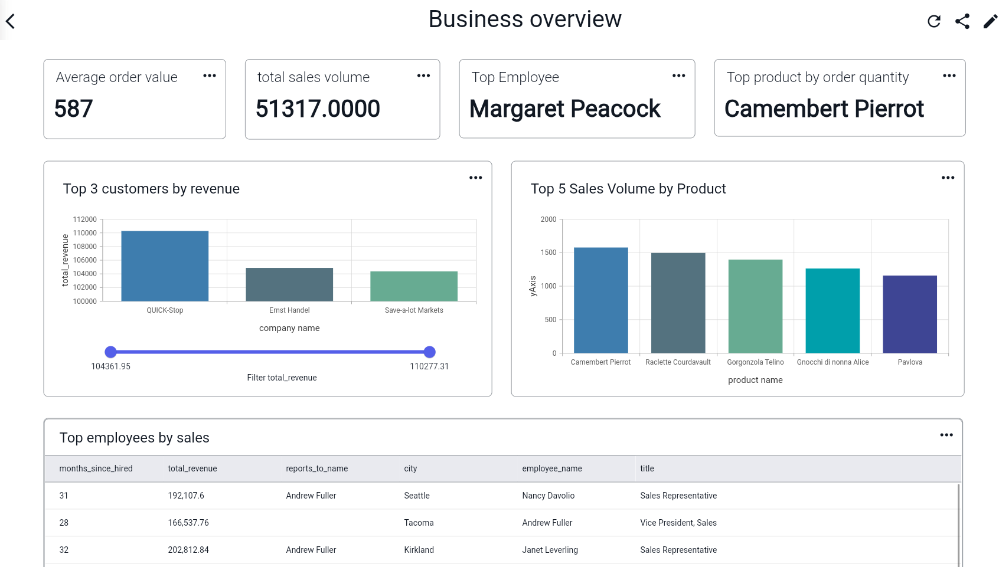

This article explains how to do it, and shows you a tool that can do it for you in seconds.
It can be broken down to 3 easy steps: Come up with a question or topic, extract the relevant data, and visualize the data.

SQL Data visualization in 3 easy steps.
Step 1: Formulate your question Step 1 is to figure out what you want to visualize. Typically this will mean defining a specific topic or question, like “How many new users signed up to our website each day this week?”. This will determine what data you need to extract from your database in step 2.
"How many new users signed up to our website each day this week?"
Step 2: Data extraction Step 2 is to extract the data you want to visualize. This involves running SQL code to join, manipulate, and extract data from one or more tables in your database. Once you know what you want to visualize, you can figure out what SQL code will extract the relevant data.
#How many users signed up each day this week?
SELECT DATE(signup_date) AS date, COUNT(*) AS new_users
FROM users
WHERE signup_date >= CURDATE() - INTERVAL 7 DAY
GROUP BY date
ORDER BY date;
Step 3: Create the visualization The final step is to use the data you extracted as an input for a graph. Which graph you use depends on the data you want to graph.

Graphing the result of the query shown above.
In this example, a line graph is best.
If you simply have a list of numbers you want to compare for different categories, you might use a bar chart or a pie chart.
If you want to see how something changes over time, a line graph is usually best.
If you want to see how things change over time for different categories, you may want to use a line graph, with a line for each category.
Types of Data Visualization.
95% of data visualization can be done with line graphs or bar graphs.
Bar Graphs

An example of a bar graph with categorical data.
Bar graphs are used to compare numbers across different categories. In the above example, you can see the number of units sold for a number of food products. It's very easy to compare the number of units sold by simply looking at the length of each bar.
Line graphs
An example of a line graph with time series data.
Line graphs are used to compare numbers across time, or across another numeric variable. In the above example, you can see the number of user signups over the course of a week in november. This makes it easy to see how this number progresses up and down over time.
Dashboards

An example of a dashboard with various graphs and reports.
Dashboards combine various graphs, charts, and reports in a single view. They allow you to monitor various data insights to keep an overview of your business, customers, or operations. The above screenshot shows a dashboard in BlazeSQL, which contains multiple graphs and data insights that provide an overview of a retail company.
SQL Data Visualization made easy with AI.
BlazeSQL automatically extracts the right data from your database, and creates the perfect graph.
All you have to do is tell Blaze, the AI chatbot, what kind of insights you’re interested in.Ex. “What is our monthly revenue growth this year for each country?”. Simply send the question in the chat, and watch Blaze do all the work for you.
Once you have the graph, or table, you can even add it to a dashboard. This allows you to create dashboards by simply telling the chatbot what you want.